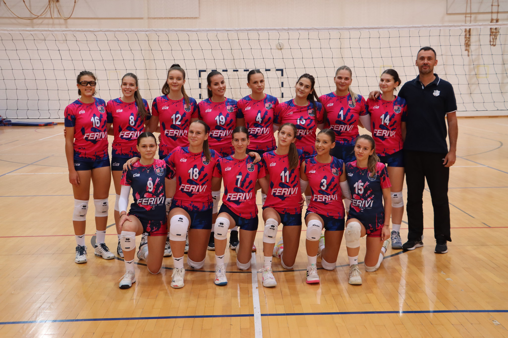

U srcu istočne regije, talentirana odbojkaška ekipa, sastavljena od četrnaest hrabrih i predanih igračica rođenih 2002. godine i mlađih, trenutno zrači svjetlom na sportskoj sceni. Njihov put prema uspjehu odvija se kroz izazovnu Prvu B ligu, gdje se susreću s istomišljenicima i konkurencijom koja obećava nezaboravne sportske trenutke.
Natjecanje u Prvoj B ligi - Regija Istok pruža im priliku da se suoče s izazovima, steknu iskustvo i razvijaju svoje vještine pod pažljivim mentorstvom njihovih trenera. Svaki susret postaje prilika za učenje, poboljšanje i rast, dok ekipa strepi i raduje se svakom novom iskustvu koje ih očekuje.
Ova odbojkaška ekipa nije samo sportski kolektiv već i obitelj, gdje se dijele radosti uspjeha, ali i podrška u teškim trenucima. Njihova povezanost izvan terena ključna je za izgradnju snažne i održive sportske zajednice.
S ponosom predstavljaju svoj grad i regiju, noseći boje svojih klubova s poštovanjem i odgovornošću. Ova mlada ekipa obećava sjajnu budućnost odbojke u regiji Istok, dok nastavlja rasti, razvijati se i ostvarivati sportske snove.
